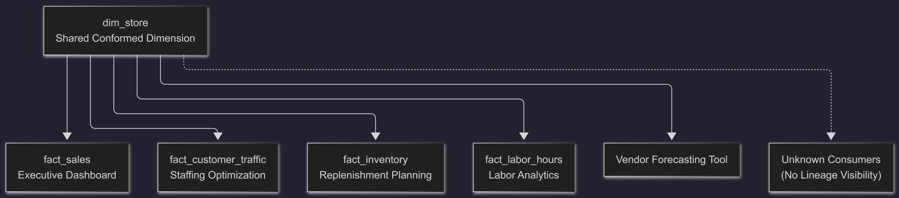

The DISTKEY That Was Right, and Still Wrong
A Redshift Investigation That Traced the Real Root Cause Across Five Layers
---
Author's Note
This account is inspired by recurring patterns observed in enterprise Amazon Redshift environments. Table names, business context, and specific figures have been generalized to protect confidentiality. The technical mechanisms, investigation sequence, and architectural trade-offs described remain representative of genuine production challenges in large-scale, multi-consumer analytical platforms.
---
Section 1: The Morning Nothing Was Supposed to Be Wrong
Eight-oh-four on a Tuesday. Three messages hit the team channel inside sixty seconds, from three people who hadn't talked to each other yet. That's the tell, more than the message itself — when three different people notice the same thing independently before anyone's had a chance to compare notes, you're not dealing with someone's misconfigured laptop.
The exec sales dashboard — store performance, category rollups, day-over-day, built to be ready before the 8:15 leadership call — had been loading in six seconds for months. That morning it sat spinning somewhere north of ninety.
Nothing had crashed. That's worth saying plainly, because it's the whole shape of the problem. No node down, no failed job, no red anything. I pulled the cluster health view at 8:06 and it looked like a Tuesday.
An outage hands you a starting point — a stack trace, a failed health check, something that's already screaming at you. This wasn't that. This was a system that was healthy by every metric anyone had thought to alert on, and useless for the one thing that mattered that morning. Nobody had written an alert for "correct answer, too slow to matter," because nobody writes those until they've been burned by one.
First move, before touching anything: figure out what kind of slow this is. Compute-starved, contending for something, or just doing more work than it needs to. From the outside these look identical. They are not the same fix.
stl_query confirmed what the frozen screen already told us — elapsed time up roughly fifteenfold against the thirty-day baseline. More useful was what hadn't moved. svv_table_info showed fact_sales at 3% unsorted, same as a month prior — no sort-key decay. skew_rows sat near 1.0 across the tables in the join path — nothing lopsided. Cluster CPU was up a few points, nowhere near saturated. Concurrency Scaling hadn't fired once. stl_alert_event_log had nothing for this query in the prior 24 hours.
That's three plausible stories ruled out inside twenty minutes — not decayed, not skewed, not starved. It's tempting to read that as "we're close." I'd push back on that instinct. Ruling something out narrows the search. It doesn't tell you where the answer is. Confusing the two is how you end up an hour later, confidently wrong about something adjacent to the truth.
One more thing before we go further, because it changes how you read everything that follows: this dashboard sits in Power BI on a scheduled Import refresh, not DirectQuery. That matters. "The dashboard was frozen" and "the query was slow" are two different claims, and conflating them is how you waste an hour chasing a gateway timeout that was never the problem. We checked — the refresh history showed the query itself, not the connector, eating the ninety-plus seconds. Worth the thirty seconds it took to confirm, because if we'd guessed wrong here the whole morning goes sideways.
The other belief worth naming and rejecting outright: that throwing more nodes at it is a safe, reversible first move while you think. It isn't neutral. It costs money, it needs a window, and if it happens to shave a few seconds off — which it usually does, a little, for reasons that have nothing to do with your actual problem — it will convince the room the theory behind it was right. It wasn't tested. It was coincidence wearing a lab coat. We didn't resize. Worth saying, because the temptation was there, and in a lot of rooms it wins.
By nine we had a narrowed problem, a clean baseline, and genuinely no cause yet. What happened next looked, at the time, like the textbook move — and it was, technically, correct. That's exactly what makes it worth telling in detail.
---
Section 2: The Fix That Was Right on Paper
By nine-fifteen someone had the EXPLAIN plan up, and you could feel the room relax the way rooms do when something finally has a name. There it was — XN Hash Join DS_DIST_BOTH between fact_sales and dim_store. Not buried. First page of any Redshift tuning guide, plain as day: both sides of the join getting redistributed across every slice, on every execution.
svl_query_summary backed it up — the join step alone was moving roughly 40M rows across the network per execution, accounting for the overwhelming majority of the query's runtime. Not a guess. A number, sitting in a system table, that told you exactly where the ninety seconds were going.
This wasn't a routine change to a random table, so it didn't go through routine channels — dim_store sits on the shared conformed layer, which around here means anything touching it goes through an emergency-change path with a rollback script attached, not the normal weekly release window. That's the only reason "afternoon window, same day" is a true sentence and not a red flag. Worth saying explicitly, because doing this on a shared dimension without that path would be a different, worse story.
dim_store is Type 1 — current state only, no history retained. That's not incidental to this story; it's the reason store_id is even a clean, unambiguous grain to distribute on. Had it been Type 2, with a surrogate key and multiple versions per store, "distribute on store_id" stops being obviously correct — you're now co-locating on a business key that isn't the actual row-level grain, and the join locality argument gets murkier. Worth checking before you touch the DDL, not after.
The change went in: DISTSTYLE from EVEN to KEY on store_id, matching fact_sales. Ran the query again. Eleven seconds. svl_query_summary on the re-run showed the redistribution step gone entirely — replaced by a local join, no network shuffle. The ticket closed with a note that read, roughly, "root cause identified and resolved."
Here's where I want to slow down, because skating past this is how the lesson gets cheapened. The fix was not wrong. I need to be precise about that — it would be a much less useful story if it were. The join genuinely was redistributing both sides, every time. The change genuinely eliminated that. Anyone in that room could defend the decision an hour later with a system-table printout in hand.
The problem was the size of the question everyone agreed to answer. The question that got asked: is this DISTKEY right for this join? The question that actually mattered: is this DISTKEY right for every join that touches this table? Those sound like the same question stated more broadly. They're not.
The first one you can verify in an afternoon with svl_query_summary. The second one requires knowing something that lived nowhere in the platform — who else depends on dim_store — because nobody had ever built a bus matrix, and the catalog tooling we had covered pipeline lineage within a team's own domain, not cross-team consumption of shared dimensions.
That's not a process the team forgot to follow. It's a capability the platform never had.
Diagram D2 — The Lineage No One Had Mapped

*flowchart TB DS["dim_storeShared Conformed Dimension"] DS --> FS["fact_sales
Executive Dashboard"] DS --> FT["fact_customer_traffic
Staffing Optimization"] DS --> FI["fact_inventory
Replenishment Planning"] DS --> FL["fact_labor_hours
Labor Analytics"] DS --> VF["Vendor Forecasting Tool"] DS -.-> UNK["Unknown Consumers
(No Lineage Visibility)"] classDef healthy fill:#d5f5e3,stroke:#2e8b57,color:#000; classDef warning fill:#fdecea,stroke:#d9534f,color:#000; classDef unknown fill:#f8f9fa,stroke:#6c757d,color:#000,stroke-dasharray: 5 5; class FS healthy; class FT warning; class FI warning; class FL warning; class VF warning; class UNK unknown;* > A shared conformed dimension can act as an enterprise hub. Without complete lineage visibility, a local optimization may unknowingly impact downstream consumers that were never evaluated.
A quick word on scope, because the mechanics here are Redshift's, specifically — DISTKEY, slice placement, DS_DIST_BOTH. On Snowflake this conversation doesn't happen the same way; there's no distribution key to get wrong, clustering behaves on a completely different axis. On Fabric, you're reasoning about V-Order and file compaction, not which slice a row lives on.
The lesson that survives the platform — a shared table has as many "correct" configurations as it has consumers, and optimizing for the loudest one is a trade, not a fix — that part travels. The mechanism doesn't.
Ticket closed. Dashboard fast. Everyone went home Tuesday believing it was over.
It took less than a week to learn it hadn't ended. It had moved. Two tickets landed forty-eight hours apart, filed by two teams who had no idea they were describing the same event.
---
Section 3: Two Tickets, Same Week, No Shared Cause Line
The first came from the store-traffic team Thursday afternoon.
Their model — fact_customer_traffic, feeding a staffing-optimization tool — had started throwing intermittent timeout errors on its late-afternoon refresh.
Intermittent is the word that should slow you down.
A deterministic failure is a bug.
An intermittent one, on a schedule that hadn't changed, on a query that hadn't changed, on data volume that hadn't meaningfully grown — that's contention, and contention means something else is sharing the room.
The second came Saturday morning, from the inventory team.
Their overnight fact_inventory load had blown past its four-hour SLA window twice in the same week, for the first time in over a year of stable history.
Neither ticket mentioned dim_store.
Neither team had touched anything of their own.
That's precisely the trap: when the thing that broke isn't the thing you own, your first instinct is to assume the platform is having a bad week, not that someone else's Tuesday-afternoon fix reached into your pipeline uninvited.
> A shared table doesn't announce who it's about to affect. It just changes, and waits for the tickets to arrive.
Nobody connected the tickets immediately.
They were triaged separately.
Different teams.
Different symptoms.
Different assumptions.
What eventually connected them wasn't insight.
It was discipline.
Both query plans touched dim_store.
That was enough reason to keep digging.
The investigation stopped being about one dashboard.
It became a question about the architecture itself.
---
Section 4: Following the Lineage, Not the Symptom
Environment at a Glance
(Insert Environment Diagram Here)
At this point the investigation had to stop being reactive.
Chasing each symptom individually would have produced three separate fixes on top of one shared cause.
Instead, we traced the lineage.
The platform looked like this:
- L1 — landing and standardization
- WRK — transformation and business rules
- DWH — conformed enterprise model
- Materialized Views — performance acceleration layer
- Data Marts and Semantic Models — consumer-facing analytics
Diagram D3 — One Change, Three Symptoms
flowchart TB CHANGE["DISTKEY Change on dim_store"] CHANGE --> S1["Executive Dashboard
Redistribution Eliminated
90 sec → 11 sec"] CHANGE --> S2["Customer Traffic Model
Slice-Level Skew
Memory Spill"] CHANGE --> S3["Inventory Load
Background Redistribution
I/O Contention"] CHANGE --> S4["Materialized View
Incremental Refresh Lost
Full Recompute"] classDef success fill:#d5f5e3,stroke:#2e8b57,color:#000; classDef issue fill:#fdecea,stroke:#d9534f,color:#000; class S1 success; class S2 issue; class S3 issue; class S4 issue; > One physical design change produced four different outcomes. The original dashboard improved dramatically, while other consumers experienced entirely different performance symptoms through unrelated mechanisms.
We traced each affected consumer through the stack.
The traffic model showed memory spill.
The inventory process showed I/O contention.
The dashboard's materialized view showed silent fallback from incremental refresh to full recompute.
Three symptoms.
Three mechanisms.
One upstream event.
And for the first time, the investigation started moving away from the dashboard and toward the model itself.
---
Section 5: What "Skewed" Actually Meant Here
The traffic-model spill deserved its own look, because it's where the investigation nearly went sideways a second time.
The instinct in the room, once svv_table_info showed skew_rows climbing on fact_sales and fact_customer_traffic post-change, was to run VACUUM and see if it helped.
It's worth stating precisely why that instinct is wrong, because it's one of the most common misdiagnoses in Redshift work, and it nearly cost us a maintenance window we didn't need to spend.
VACUUM reclaims deleted-row space and re-sorts rows within a slice's existing boundaries.
It does not move rows between slices.
Distribution skew — an uneven number of rows landing on different slices — is a placement problem, not a sort problem, and no amount of re-sorting within a slice changes how many rows that slice was assigned in the first place.
We ran the numbers before running the command.
skew_rows for fact_sales sat at roughly 2.3, meaning the busiest slice was holding well over double the rows of the least busy one.
VACUUM was never going to touch that number.
The actual cause was structural, and it was sitting in dim_store all along.
store_id was not an evenly distributed key.
A handful of values — flagship stores and aggregated online channels — accounted for a disproportionate share of transaction volume across the platform.
Co-locating fact tables on store_id didn't just eliminate redistribution.
It concentrated the heaviest-volume rows onto the same physical slices.
For every fact table.
At the same time.
> The fix hadn't introduced a new problem so much as it had made an old, dormant one load-bearing for the first time.
That distinction mattered.
The skew wasn't created by the DISTKEY change.
The skew already existed in the business.
The DISTKEY change simply exposed it.
Under EVEN distribution, Redshift ignored business meaning and spread rows mechanically.
Under KEY distribution, Redshift inherited the real-world imbalance embedded in the business key.
The platform's physical layout became a reflection of the business itself.
That's where the investigation changed direction.
It stopped being about distribution keys.
It started being about modeling decisions.
---
Section 6: The Grain Problem Underneath the Distribution Problem
The question that actually needed answering wasn't:
> What distribution style fixes this?
The question was:
> Why does a single value in store_id carry forty times the transaction volume of a normal store?
The answer wasn't hiding in a query plan.
It was hiding in the data model.
When we traced the lineage all the way back to the L1 and WRK layers, we found something that had existed for years.
dim_store wasn't modeling a single business concept.
It was modeling two.
Physical retail locations.
And aggregated digital sales channels.
Online sales.
Marketplace integrations.
Digital storefronts.
All represented as single synthetic "store" rows.
From a reporting perspective, the design was elegant.
Every downstream report could treat online and offline channels uniformly.
No branching logic.
No special-case joins.
No additional dimensions.
But that convenience came with a hidden cost.
One synthetic row represented a volume of transactions that dwarfed every physical location.
As digital sales grew, that imbalance grew with them.
The model encoded business skew directly into the dimension grain.
No DISTKEY could fix that.
No SORTKEY could fix that.
No VACUUM could fix that.
You can redistribute rows.
You cannot redistribute the business meaning behind a row.
If one value legitimately represents thirty-five percent of enterprise transactions, every physical design strategy must eventually deal with that reality.
EVEN distribution hides it.
KEY distribution exposes it.
Neither removes it.
That's the thesis of the incident.
The bottleneck wasn't born in the dashboard.
It wasn't born in the materialized view.
It wasn't born in the DWH layer.
It originated years earlier when a modeling decision defined what a "store" meant.
Everything downstream was merely experiencing the consequences.
---
Section 7: Why We Couldn't Just Fix dim_store
The obvious solution seemed straightforward.
Split the grain.
Separate physical stores from digital channels.
Give each concept its own dimension.
Remove the concentration at the source.
Technically, that would have been the cleanest solution.
Operationally, it was impossible.
At least not immediately.
dim_store wasn't an internal implementation detail.
It was a published enterprise contract.
Power BI semantic models depended on it.
Scheduled ETL jobs depended on it.
Inventory systems depended on it.
Forecasting applications depended on it.
External vendor integrations depended on it.
Changing the grain would have meant coordinating dozens of downstream consumers.
Some owned by other teams.
Some owned by vendors.
Some with release schedules measured in months rather than days.
The issue wasn't technical complexity.
The issue was dependency complexity.
This is one of the most important lessons in enterprise architecture.
The technically correct solution and the shippable solution are often different solutions.
Interfaces become expensive precisely because they succeed.
The more consumers depend on them, the harder they become to change.
dim_store had become successful enough to be dangerous.
Changing it wasn't a database change.
It was an organizational change.
And organizational changes move slower than production incidents.
So the redesign had to happen somewhere else.
Somewhere invisible to consumers.
Somewhere inside the platform.
---
Section 8: Redesigning the Work Layer, Not the Interface
The eventual solution came from separating two concepts that had accidentally become linked.
Business grain.
And physical distribution.
Consumers cared about the business grain.
Redshift cared about physical distribution.
There was no requirement that they be represented by the same key.
The redesign happened entirely within the WRK layer.
No downstream consumer saw it.
No contract changed.
No semantic model needed modification.
No vendor needed notification.
For the handful of high-volume digital-channel records responsible for the skew, we introduced a derived distribution bucket.
Instead of distributing those records solely by store_id, we computed a synthetic distribution value using a secondary attribute and a hashing function.
The objective wasn't to change business meaning.
The objective was to spread physical placement across slices.
Ordinary stores continued using their natural key.
Only the concentrated digital-channel records were salted.
The salting existed purely for distribution.
Not for reporting.
Not for analytics.
Not for business logic.
Diagram D4 — WRK Layer Redesign: Salting Without Breaking the Contract
flowchart LR
A["WRK Layer Fact Data"]
B{"High Volume Store
or Digital Channel?"}
C["Apply Salting
Hash(order_id) % N"]
D["Keep Natural
store_id"]
E["Distributed Processing"]
F["DWH Reconciliation
Re-Aggregate to Original Grain"]
G["Published Consumer Layer
Contract Unchanged"]
A --> B
B -->|Yes| C B -->|No| D
C --> E D --> E
E --> F F --> G > Salting was introduced only within the WRK layer to improve physical distribution. The business-facing grain and consumer contracts remained unchanged after reconciliation in DWH.
The second part of the solution was equally important.
Before anything crossed into the DWH layer, the salted buckets were re-aggregated back to the original business grain.
Consumers never saw the buckets.
Consumers never saw the salting.
Consumers continued seeing the same store_id values they always had.
The contract remained unchanged.
The optimization remained internal.
One more thing worth flagging.
The reconciliation process required rebuilding portions of the downstream structures.
Whenever a large rebuild occurs, SORTKEY effectiveness should be revalidated rather than assumed.
Eliminating redistribution only to lose scan pruning would have been a poor trade.
We verified that the existing date-based SORTKEY strategy continued delivering the same zone-map pruning benefits after the redesign.
Distribution improved.
Scan efficiency remained intact.
The redesign also included several supporting changes:
- Targeted
ANALYZEon frequently joined and filtered columns - Explicit maintenance-window scheduling for future DISTKEY changes
- Ongoing monitoring of
skew_rowsandunsorted% - Validation of materialized-view refresh behavior after physical redesign
The goal wasn't simply to fix one incident.
It was to create guardrails that would detect the next one sooner.
---
Section 9: What We Rejected, and Why
Several alternatives were considered.
Some looked attractive.
Some looked simpler.
None addressed the actual problem.
Option 1: Revert dim_store Back to EVEN Distribution
This would have restored the original physical layout.
It also would have restored the original dashboard problem.
The Tuesday incident would return immediately.
The ninety-second query would become normal again.
Nothing would be learned.
Nothing would be fixed.
This option simply moved the pain back to its original owner.
Rejected.
Option 2: DISTSTYLE ALL
At first glance, this looked promising.
Replicate dim_store to every node.
Eliminate redistribution entirely.
Allow every consumer to perform local joins.
Problem solved.
Except it wasn't.
dim_store wasn't static.
It received daily updates.
Type 1 changes.
New channel additions.
Attribute corrections.
Store metadata updates.
DISTSTYLE ALL makes every write more expensive because every node must maintain a copy.
What appears inexpensive at today's scale often becomes technical debt at tomorrow's scale.
A growing shared dimension replicated everywhere eventually becomes a write-side bottleneck.
Rejected.
Option 3: Immediately Split the Grain
From a modeling perspective, this was the cleanest solution.
Separate physical stores.
Separate digital channels.
Eliminate the concentration.
Create a more accurate business representation.
Technically correct.
Operationally unrealistic.
Too many downstream consumers.
Too many dependencies.
Too many contracts.
The cost of coordination exceeded the urgency of the incident.
Rejected for now.
Not rejected forever.
Option 4: Tune Each Consumer Individually
This approach would have produced three separate fixes:
- One for the dashboard
- One for the traffic model
- One for inventory processing
The problem with symptom-based optimization is that it assumes you've already found every symptom.
We hadn't.
We couldn't.
The actual number of consumers remained unknown.
Fixing three visible problems while leaving the root cause intact simply guarantees a fourth ticket later.
Rejected.
The common theme across every rejected option was simple.
They optimized symptoms.
Not causes.
The investigation had already proven where that approach leads.
---
Section 10: What Actually Changed, Measured Carefully
Engineering articles often overstate outcomes.
This one shouldn't.
The results were meaningful.
Not magical.
The executive dashboard returned to single-digit response times.
The original query stabilized near eleven seconds after the redesign.
Materialized-view refreshes returned to incremental maintenance instead of full recomputation.
The staffing model stopped experiencing intermittent timeout events.
Across the observation period that followed, no new memory-spill events appeared in the relevant hash-join stages.
The inventory pipeline returned to its SLA window.
Overnight processing consistently completed within the operational threshold required by downstream warehouse operations.
The skew metrics improved substantially.
skew_rows decreased from approximately 2.3 to under 1.3.
Not perfect.
Better.
Importantly, scan efficiency remained stable.
Post-redesign analysis showed no meaningful increase in blocks scanned for the dashboard's date-filtered workloads.
The skew reduction did not come at the expense of SORTKEY effectiveness or zone-map pruning.
That validation mattered.
Performance tuning often succeeds in one dimension while quietly regressing another.
This time it didn't.
The outcome most people remember is the faster dashboard.
The outcome I remember is different.
The platform became predictable again.
Engineers stopped discovering hidden consequences several days after a change.
That's harder to measure.
And often more valuable.
Diagram D5 — Before vs After: Where the Skew Lives
flowchart RL
DASH["Dashboard Slowdown"] MART["Data Mart"] MV["Materialized View"] DWH["DWH Layer"] WRK["WRK Layer"] L1["L1 Layer"] ROOT["Grain Design Decision"]
DASH --> MART MART --> MV MV --> DWH DWH --> WRK WRK --> L1 L1 --> ROOT
> The investigation succeeded because the team stopped treating the dashboard as the problem and followed the lineage upstream until reaching the original modeling decision that created the downstream symptoms.
---
Section 11: What's Still Unresolved
Two things remain unresolved.
Both matter.
The first is the grain problem itself.
Physical stores and digital channels still share the same published dimension.
The salting strategy manages the consequences.
It does not eliminate the underlying modeling decision.
As online volume grows, the pressure on that design will grow with it.
Eventually the organization may need to revisit the grain directly.
The second issue is more concerning.
The lineage gap still exists.
The incident revealed it.
The investigation worked around it.
Nothing fundamentally removed it.
We now know far more about dim_store consumers than we did before.
Mostly because we spent time manually discovering them.
The next engineer facing a similar change would still need to perform much of that discovery themselves.
The highest-priority follow-up is not another DISTKEY review.
It is visibility.
Shared assets require shared lineage.
Without it, teams optimize locally and discover globally.
That's exactly what happened here.
---
Section 12: The Lesson That Outlasted the Ticket
Looking back, every individual decision made during the incident was defensible.
Changing the DISTKEY was reasonable.
Analyzing query plans was reasonable.
Avoiding unnecessary VACUUM operations was reasonable.
Rejecting DISTSTYLE ALL was reasonable.
None of those decisions were mistakes.
The mistake was assuming a shared enterprise object could be optimized in isolation.
It couldn't.
And it never could.
The dashboard failure wasn't caused by the dashboard.
The inventory delay wasn't caused by the inventory process.
The staffing-model spill wasn't caused by the staffing team.
Each symptom appeared in a different place.
Each root cause pointed to the same place.
A modeling decision made years earlier.
One layer further upstream than anyone initially expected.
> Downstream symptoms are where you notice a problem. They are rarely where the problem was made.
That's the lesson that survives beyond Amazon Redshift.
The mechanism changes across platforms.
Snowflake.
Fabric.
Databricks.
BigQuery.
The pattern remains remarkably consistent.
A fix appears successful.
A symptom disappears.
A different symptom emerges elsewhere.
The real challenge is resisting the urge to stop investigating when the first visible problem goes away.
We didn't close this incident.
We reduced its impact.
We moved the cost to a layer where it could be managed deliberately.
We documented the trade-offs openly.
And we identified the work that still remains.
That's not a lesser outcome than "solved."
At enterprise scale, with shared models and long-lived contracts, it's usually the honest one.
Somewhere in that same conformed layer, another perfectly reasonable design decision is sitting quietly.
Waiting for an ordinary Tuesday morning to give it somewhere to concentrate.
This time, at least, we'll know where to look before the third ticket lands.
---
Key Takeaways
1. A correct DISTKEY can still create enterprise-wide problems when applied to a shared conformed dimension. 2. Query-level optimization and platform-level optimization are not the same thing. 3. Distribution skew often originates from business-modeling decisions, not database-engine behavior. 4. VACUUM cannot solve slice-level distribution skew. 5. Shared dimensions are architectural contracts, not local implementation details. 6. Physical optimization decisions should always be evaluated against all known consumers. 7. Lineage visibility is as important as performance visibility. 8. Sometimes the best fix happens in the WRK layer, not in the published model. 9. Enterprise performance issues frequently originate multiple layers upstream from where symptoms appear. 10. The most valuable outcome is often predictability, not speed.
---
Environment at a Glance
flowchart RL
DASH["Dashboard Slowdown"] MART["Data Mart"] MV["Materialized View"] DWH["DWH Layer"] WRK["WRK Layer"] L1["L1 Layer"] ROOT["Grain Design Decision"]
DASH --> MART MART --> MV MV --> DWH DWH --> WRK WRK --> L1 L1 --> ROOT
> The investigation succeeded because the team stopped treating the dashboard as the problem and followed the lineage upstream until reaching the original modeling decision that created the downstream symptoms.
---
References
- Amazon Redshift Distribution Styles
- Amazon Redshift Sort Keys
- Amazon Redshift Materialized Views
- Amazon Redshift System Tables and Views
- The Data Warehouse Toolkit — Ralph Kimball
- AWS Prescriptive Guidance
---
Related Articles
The Post-Acquisition Assumption Gap
How inherited assumptions create hidden risks across enterprise data platforms.
When Data Becomes the Bottleneck
Unmasking the real causes behind SLA misses in modern analytics ecosystems.
Slowly Changing Dimensions in the Real World
Why SCD design decisions often create consequences years after implementation.
---
Author
Aniruddha Banerjee
Project Manager | Data Architect | Enterprise Data Engineering | Cloud & Analytics Platforms
Sharing real-world lessons from enterprise-scale data platforms, architecture investigations, performance engineering, and operational excellence.
GitHub Pages: https://ruddhanib.github.io/aniruddhablog/
LinkedIn: https://www.linkedin.com/in/ruddhani/
Medium: https://ruddhani.medium.com/
---
Author's Note
This article is inspired by recurring patterns observed across enterprise Amazon Redshift environments. Table names, business context, operational timelines, and selected implementation details have been generalized to protect confidentiality.
The technical mechanisms, architectural trade-offs, investigation approaches, and performance-engineering principles described remain representative of genuine production challenges commonly encountered in large-scale analytical platforms.
---